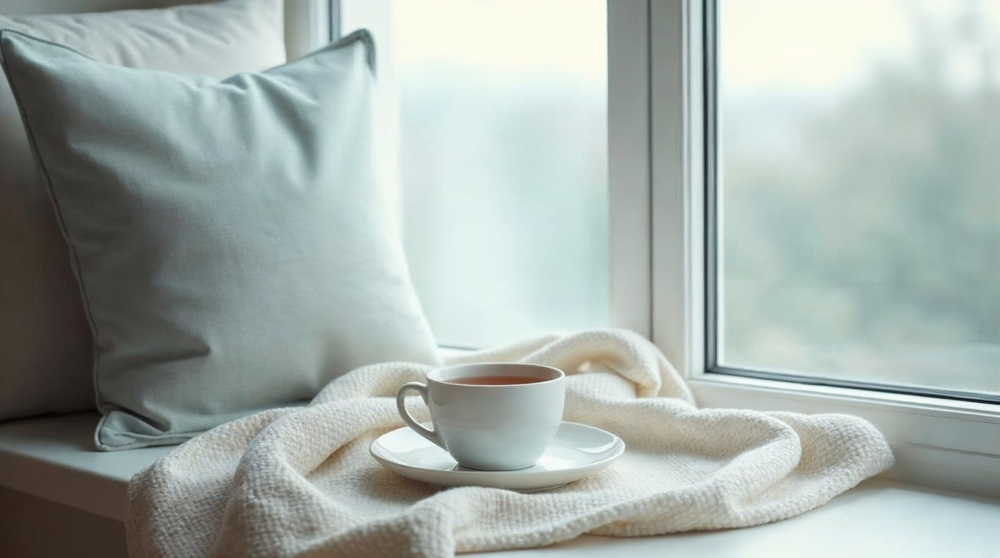
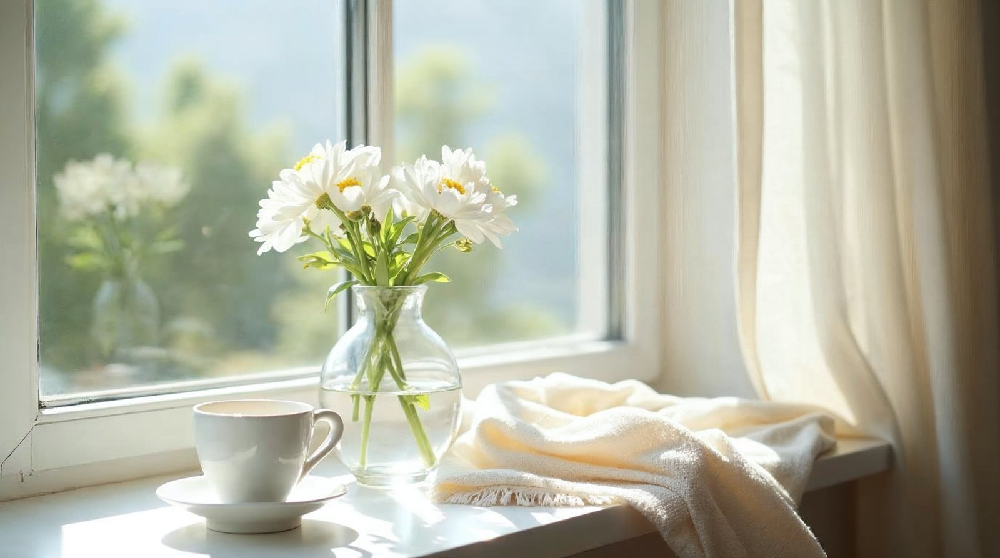
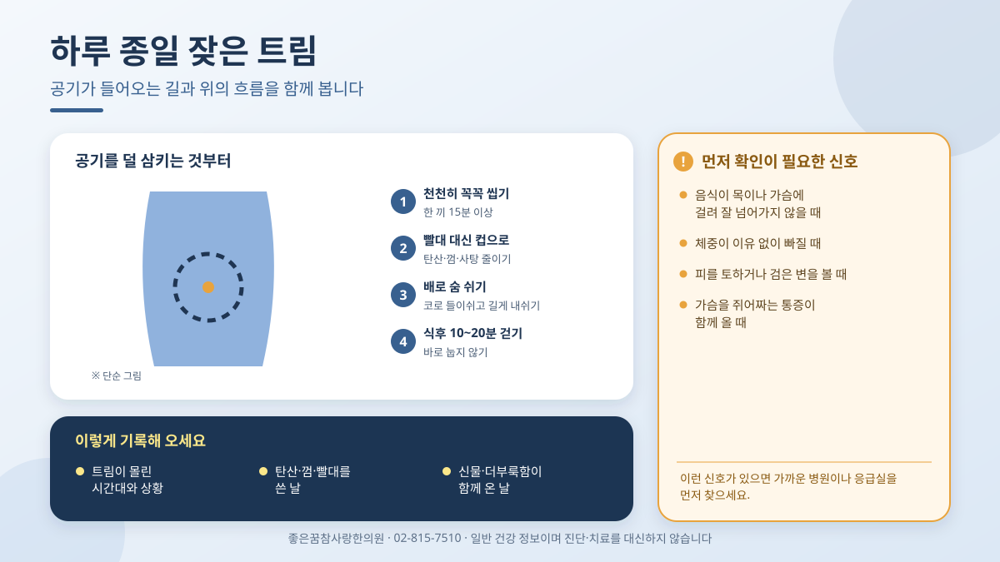

이종호 한의사 감수좋은꿈참사랑한의원 대표원장 (한의사 면허번호 19769)발행 2026-11-26 · 수정 2026-11-26
이 글의 차례
회의실에서 조용히 자료를 넘기는데 목 아래에서 꺽 하고 트림이 올라옵니다. 입을 꾹 다물고 참아 보지만 몇 분 지나지 않아 또 올라옵니다. 식사를 한 지 한참 지났는데도 하루 종일 이런 일이 이어지니, 사람들 앞에서 말을 하는 것조차 신경이 쓰입니다.
진료실에서 트림 이야기를 꺼내시는 분들은 대개 조금 머쓱해하십니다. 큰 병은 아닌 것 같은데 일상에서는 꽤 불편하고, 어디에 물어봐야 할지 몰라 오래 참아 오셨다고 말씀하십니다. 저는 이 불편도 충분히 진료실에서 이야기할 만한 일이라고 먼저 말씀드립니다.
트림은 위에 들어온 공기가 위로 빠져나오는 자연스러운 일입니다. 식사 뒤에 한두 번 하는 트림은 누구에게나 있습니다. 그런데 하루 종일 수십 번 이어지거나, 트림을 해도 속이 시원하지 않고 다시 차오르는 느낌이 든다면 생활 속에서 공기가 들어오는 길과 위의 흐름을 함께 살펴볼 필요가 있습니다.
트림이 잦은 분들을 살펴보면 의외로 위 자체보다 공기를 삼키는 습관이 큰 몫을 하는 경우가 많습니다. 반대로 위가 음식을 내려보내는 흐름이 느려져 가스가 차는 경우도 있습니다. 어느 쪽이 큰지 나눠 보는 것이 첫걸음입니다.
트림은 어떻게 생기나요?
우리는 음식을 삼킬 때마다 조금씩 공기를 함께 삼킵니다. 물을 마실 때, 말할 때, 침을 삼킬 때도 공기가 들어옵니다. 이 공기가 위에 모였다가 식도를 거쳐 입으로 빠져나오는 것이 트림입니다.
탄산음료나 맥주처럼 기체가 녹아 있는 음료를 마시면 위 안에서 기체가 풀려나 트림이 늘어납니다. 위가 음식을 장으로 내려보내는 흐름이 느려지면 음식과 함께 가스가 오래 머물면서 위가 부푼 느낌과 함께 트림이 잦아집니다.
트림이라고 다 같은 것은 아닙니다. 위에서 올라오는 트림은 속이 한결 시원해지는 느낌이 있지만, 목 바로 아래 식도까지만 들어온 공기가 되돌아 나오는 트림은 해도 해도 시원하지 않고 연달아 이어지는 특징이 있습니다. 후자는 무의식적으로 공기를 삼키는 습관과 관련이 깊습니다.
왜 트림이 하루 종일 이어질까요?
가장 흔한 이유는 공기를 많이 삼키는 습관입니다. 빨리 먹기, 말하면서 먹기, 빨대로 마시기, 껌 씹기, 사탕 물고 있기, 담배는 모두 공기를 함께 들이마시게 합니다. 코가 막혀 입으로 숨을 쉬는 분도 공기를 많이 삼키기 쉽습니다.
긴장도 공기를 삼키게 만듭니다. 신경이 곤두서면 자기도 모르게 침을 자주 삼키고, 목에 뭔가 걸린 것 같아 헛기침과 함께 공기를 꿀꺽 넘기는 버릇이 생깁니다. 그러다 트림이 나오면 잠시 시원하니, 다시 공기를 삼키는 고리가 만들어집니다.
위의 흐름이 느려진 경우에도 트림이 늘어납니다. 기름진 음식이나 과식, 늦은 야식이 이어지면 위가 비워지는 시간이 길어지고, 그 사이 가스가 차오릅니다. 이런 분은 트림과 함께 더부룩함이나 명치가 꽉 막힌 느낌을 함께 말씀하십니다.
위산이 거꾸로 올라오는 역류가 있을 때도 트림이 잦아집니다. 트림을 할 때 신물이나 쓴 물이 함께 올라오거나, 가슴 뒤쪽이 타는 듯한 느낌이 있다면 역류 쪽을 함께 살펴봅니다. 트림이 역류를 부추기고, 역류가 다시 트림을 부르는 경우도 있습니다.
드시는 약과 음식도 살핍니다. 일부 당뇨약, 섬유질 보충제, 콩이나 양배추처럼 가스를 많이 만드는 음식, 무가당 사탕에 들어가는 당알코올은 트림과 방귀를 함께 늘리기도 합니다.
비슷해 보이지만 다른 불편과는 어떻게 다른가요?
더부룩함은 배가 차고 내려가지 않는 느낌이 중심이고, 트림은 그 공기가 위로 빠져나오는 일입니다. 두 가지가 함께 오는 분이 많지만, 더부룩함 없이 트림만 잦다면 공기를 삼키는 습관을 먼저 살펴봅니다.
방귀가 잦은 것은 장에서 만들어진 가스가 아래로 나오는 것이고, 트림은 주로 위와 식도의 공기가 위로 나오는 것입니다. 둘 다 많다면 음식 종류와 장의 흐름까지 함께 봅니다.
딸꾹질은 횡격막이 갑자기 수축하며 나는 소리라서 트림과는 생기는 원리가 다릅니다. 다만 과식이나 탄산음료 뒤에 둘이 함께 나타나는 경우는 있습니다.
언제 심해지는지에 따라 나눠 보면
식사 직후에 몰아서 나는 트림은 먹는 속도와 양, 탄산음료를 먼저 살핍니다. 이런 분은 한 끼를 15분 이상 천천히 드시는 것만으로도 트림이 줄어드는 것을 느끼시는 경우가 많습니다.
식사와 상관없이 하루 종일 이어지는 트림은 무의식적으로 공기를 삼키는 습관을 먼저 떠올립니다. 특히 일에 집중하거나 긴장할 때 심해지고, 잠든 동안에는 트림이 없다면 이 갈래일 가능성이 큽니다.
밤에 누우면 심해지거나 아침에 신물과 함께 오는 트림은 역류를 함께 살핍니다. 잠들기 직전의 식사, 꽉 끼는 옷, 늘어난 뱃살이 위를 눌러 올라오는 흐름을 키우기도 합니다.

목에 뭔가 걸린 느낌과 트림이 함께 올 때
트림이 잦은 분 가운데 목 아래에 뭔가 걸려 있는 듯한 느낌을 함께 말씀하시는 분이 많습니다. 침을 삼켜도 내려가지 않고, 헛기침을 해도 시원하지 않으니 자꾸 꿀꺽 삼키게 되고, 그때마다 공기가 들어가 트림으로 나옵니다.
이런 느낌은 긴장할 때 목과 가슴 앞쪽 근육이 굳으면서 커지는 경우가 많습니다. 어깨를 귀 쪽으로 올리고 있지는 않은지, 턱을 꽉 다물고 있지는 않은지 하루에 몇 번씩 스스로 점검해 보세요. 어깨를 툭 떨어뜨리고 숨을 길게 내쉬는 것만으로도 목의 조임이 조금 느슨해지기도 합니다.
목에 걸린 느낌이 음식을 삼킬 때 실제로 걸리는 것인지, 침을 삼킬 때만 느껴지는 것인지는 꼭 나눠서 말씀해 주세요. 음식이 실제로 걸린다면 먼저 내과나 이비인후과에서 확인이 필요하고, 침을 삼킬 때만 느껴진다면 긴장과 습관 쪽을 함께 살펴봅니다.
계절과 생활에 따라 달라지는 트림
겨울에는 모임과 술자리가 늘고, 따뜻한 국물에 밥을 말아 빨리 먹는 일이 잦아지면서 트림이 늘어나는 분이 많습니다. 여름에는 차가운 탄산음료와 맥주가 트림을 부르기 쉽습니다. 같은 분이라도 계절마다 트림이 많아지는 이유가 달라질 수 있습니다.
일하는 환경도 영향을 줍니다. 전화 응대나 강의처럼 말을 많이 하는 일, 운전처럼 오래 긴장하는 일, 책상 앞에서 구부정하게 앉아 있는 시간이 긴 일은 모두 공기를 삼키거나 위를 누르는 흐름을 만듭니다. 일하는 자세와 쉬는 시간을 함께 돌아보시면 실마리가 보이기도 합니다.
트림을 두고 자주 헷갈리는 것
첫째, 트림을 일부러 해서 시원하게 빼내야 한다는 생각입니다. 억지로 트림을 하려고 하면 오히려 공기를 더 삼키게 되어 고리가 길어집니다. 트림이 나오려 할 때 억지로 끌어올리지 말고, 입을 다물고 코로 천천히 숨을 쉬어 보세요.
둘째, 탄산음료가 소화를 돕는다는 생각입니다. 트림이 나와 잠시 시원하게 느껴질 수는 있지만, 위에 기체를 더 넣는 셈이라 트림이 잦은 분께는 권하지 않습니다.
셋째, 트림이 많으면 위가 약해서라고만 생각하시는 경우입니다. 실제로는 먹는 습관과 숨 쉬는 습관이 큰 몫을 하는 경우가 많습니다. 위를 탓하기 전에 하루 동안 공기가 들어오는 길을 먼저 점검해 보시길 권합니다.
먼저 이렇게 여쭙니다
처음 오시면 대략 이런 순서로 여쭙니다. 미리 생각해 오시면 이야기가 수월해집니다.
- 트림은 언제부터, 하루에 몇 번쯤 나나요?
- 식사 직후에 몰리나요, 하루 종일 이어지나요?
- 트림을 하면 속이 시원해지나요, 금방 다시 차오르나요?
- 신물, 속쓰림, 더부룩함, 메슥거림이 함께 오나요?
- 탄산음료, 껌, 빨대, 담배를 자주 쓰시나요?
- 코막힘이나 입으로 숨 쉬는 버릇이 있나요?
모든 질문에 정확히 답하지 못하셔도 괜찮습니다. 하루 이틀만 트림이 날 때 무엇을 하고 있었는지 떠올려 보셔도 공기가 들어오는 길이 꽤 보이기 시작합니다.
일상에서 먼저 해 볼 수 있는 것
트림을 줄이는 첫걸음은 공기를 덜 삼키는 것입니다. 한꺼번에 다 바꾸기보다 하나씩 골라 일주일씩 해 보세요.
- 한 끼를 15분 이상, 한 입에 20번 이상 씹으며 천천히 먹기
- 먹는 동안 말을 줄이고, 입을 다물고 씹기
- 빨대 대신 컵으로 마시기
- 탄산음료와 맥주, 껌, 사탕 줄이기
- 식사 뒤 바로 눕지 말고 10~20분 천천히 걷기
- 허리를 조이는 옷이나 벨트를 느슨하게 하기
트림이 올라오려 할 때는 목을 곧게 펴고 입을 다문 채 코로 천천히 숨을 들이쉬고, 배가 부풀었다가 내려가는 느낌으로 길게 내쉬어 보세요. 가슴으로 숨을 쉬면 공기를 삼키기 쉬운데, 배로 숨을 쉬는 연습만으로도 트림 횟수가 줄어드는 분이 계십니다.
콩, 양배추, 양파, 브로콜리처럼 가스를 많이 만드는 음식은 한 번에 많이 드시기보다 양을 조절해 보세요. 꼭 끊을 필요는 없고, 트림이 유난히 많은 날 무엇을 먹었는지 기록해 두면 내 몸에 맞는 양을 찾는 데 도움이 됩니다.
코가 자주 막히는 분은 코막힘을 함께 살피는 것도 트림을 줄이는 길이 됩니다. 입으로 숨을 쉬면 공기를 삼키기 쉽고, 잠든 동안에도 입이 벌어져 아침에 배가 부풀어 있기도 합니다. 비염이 있다면 그 부분도 함께 말씀해 주세요.
한의원에서 함께 살필 수 있는 경우
- 내과 검사에서 큰 이상은 없다는데 트림이 오래 이어지는 경우
- 긴장하면 목이 조이고 트림이 연달아 나는 경우
- 트림과 함께 명치가 더부룩하고 식사량이 줄어든 경우
- 손발과 배가 차고, 찬 음식을 먹으면 트림이 늘어나는 경우
- 트림 때문에 사람 만나는 자리가 부담스러워진 경우
좋은꿈참사랑한의원에서는 먼저 아래 '먼저 확인이 필요한' 신호가 없는지 살핀 뒤, 맥과 배, 혀를 함께 봅니다. 명치 아래가 단단하게 뭉쳐 있는지, 윗배에 가스가 차 있는지, 목과 가슴 앞쪽 근육이 긴장되어 있는지도 직접 만져 보며 확인합니다.
진찰한 내용을 바탕으로 침, 온열 관리, 한약 상담 가운데 지금 상태에 맞는 것을 정하고, 먹는 습관과 숨 쉬는 습관 가운데 바꿔 볼 것 하나를 함께 고릅니다. 한약을 상의할 때는 드시는 약을 모두 확인하고 신중하게 정합니다.
내과에서 위장약을 처방받아 드시고 계시다면 그대로 이어 가시면 됩니다. 처방받은 약은 처방한 선생님과 상의 없이 멈추지 않으시도록 안내합니다. 위장약을 드시면서 트림이 어떻게 달라졌는지도 함께 알려 주시면 도움이 됩니다.
이렇게 기록해 오시면 상담이 쉬워집니다
트림은 하루 중에 언제, 무엇을 하다가 나는지가 가장 큰 단서입니다. 일주일만 간단히 적어 보세요.
- 트림이 많았던 시간대와 대략의 횟수
- 그 직전에 먹은 음식과 음료, 먹은 속도
- 탄산음료, 껌, 빨대, 담배를 쓴 날 표시
- 긴장했거나 바빴던 날 표시
- 신물, 속쓰림, 더부룩함이 함께 온 날
- 잠든 시각과 마지막 식사 시각
기록을 나란히 놓고 보면 트림이 몰리는 시간과 상황이 드러납니다. 생각보다 회의 시간, 운전 중, 컴퓨터 앞처럼 긴장하는 자리에서 트림이 몰린다는 것을 발견하시는 분이 많습니다. 반대로 주말이나 쉬는 날에 트림이 눈에 띄게 줄어든다면, 그 차이 자체가 생활에서 무엇을 바꿔 볼지 알려 주는 좋은 단서가 됩니다.

트림 때문에 마음 쓰셨던 분께
트림은 소리가 나서 남의 눈치를 보게 되는 불편입니다. 그래서 몸보다 마음이 먼저 지치기도 합니다. 참으려고 애쓸수록 목과 가슴이 긴장해 오히려 공기를 더 삼키게 되기도 합니다.
트림은 습관과 리듬을 조금씩 바꾸면서 횟수와 세기가 달라지는 경우가 많습니다. 오늘 하루의 횟수보다 2주 동안의 흐름을 함께 보시길 권합니다. 이번 주에는 천천히 먹기와 빨대 대신 컵으로 마시기 가운데 하나만 골라 보세요. 다음에 오시면 그 기록을 함께 펼쳐 보겠습니다.
이런 증상은 먼저 확인이 필요합니다
- 음식이 목이나 가슴에 걸려 잘 넘어가지 않거나, 체중이 이유 없이 빠지는 경우
- 피를 토하거나 대변이 검게 나오는 경우, 또는 가슴을 쥐어짜는 통증이 트림과 함께 오는 경우
이런 신호가 있으면 한의원보다 가까운 병원이나 응급실을 먼저 찾으세요.
함께 읽으면 좋은 글
- 식사 뒤에 속이 더부룩한 것은 무엇 때문이고, 속쓰림과는 어떻게 다른가요?
- 속쓰림과 신물이 오래 갈 때 어떤 점을 살펴보고, 언제 검사를 받아야 하나요?
- 소화가 오래 불편할 때 한의원에서는 무엇을 먼저 묻나요?
- 자주 체한다는 느낌, 식체나 담적이라는 말은 무엇을 뜻하고 어떻게 살피나요?
- 속쓰림인지 더부룩함인지 헷갈릴 때는 어떤 말로 설명하면 좋을까요?

여쭙는 것
- 트림은 언제부터, 하루에 몇 번쯤 나나요?
- 식사 직후에 몰리나요, 하루 종일 이어지나요?
- 트림을 하면 속이 시원해지나요, 금방 다시 차오르나요?
생활에서 해 볼 것
- 한 끼를 15분 이상, 한 입에 20번 이상 씹으며 천천히 먹기
- 먹는 동안 말을 줄이고, 입을 다물고 씹기
- 빨대 대신 컵으로 마시기
한의원에서 함께 살필 것
- 내과 검사에서 큰 이상은 없다는데 트림이 오래 이어지는 경우
- 긴장하면 목이 조이고 트림이 연달아 나는 경우
- 트림과 함께 명치가 더부룩하고 식사량이 줄어든 경우
먼저 확인이 필요한 신호
- 음식이 목이나 가슴에 걸려 잘 넘어가지 않거나, 체중이 이유 없이 빠지는 경우
- 피를 토하거나 대변이 검게 나오는 경우, 또는 가슴을 쥐어짜는 통증이 트림과 함께…
한눈에 보는 표
| 구분 | 핵심 |
|---|---|
| 여쭙는 것 | 트림은 언제부터, 하루에 몇 번쯤 나나요? 식사 직후에 몰리나요, 하루 종일 이어지나요? |
| 생활에서 해 볼 것 | 한 끼를 15분 이상, 한 입에 20번 이상 씹으며 천천히 먹기 먹는 동안 말을 줄이고, 입을 다물고 씹기 |
| 한의원에서 함께 살필 것 | 내과 검사에서 큰 이상은 없다는데 트림이 오래 이어지는 경우 긴장하면 목이 조이고 트림이 연달아 나는 경우 |
| 먼저 확인이 필요한 신호 | 음식이 목이나 가슴에 걸려 잘 넘어가지 않거나, 체중이 이유 없이 빠지는 경우 피를 토하거나 대변이 검게 나오는 경우, 또는 가슴을 쥐어짜는 통증이 트림과 함께 오는 경우 |
자주 묻는 질문
트림을 참으면 몸에 안 좋은가요?
억지로 참을 필요는 없지만, 억지로 끌어올릴 필요도 없습니다. 자연스럽게 나오는 트림은 그대로 두시고, 공기를 덜 삼키는 습관을 함께 들이시는 쪽을 권합니다.
트림이 잦으면 위가 약하다는 뜻인가요?
꼭 그렇지는 않습니다. 빨리 먹기, 탄산음료, 껌, 긴장할 때 침을 자주 삼키는 습관처럼 공기가 들어오는 길이 큰 몫을 하는 경우가 많아서 그 부분부터 함께 살핍니다.
탄산수는 설탕이 없으니 괜찮지 않나요?
설탕이 없어도 기체가 위 안에서 풀려나기 때문에 트림이 잦은 분께는 줄여 보시길 권합니다. 미지근한 물이나 보리차가 속에 부담이 적습니다.
트림과 함께 신물이 올라오면 무엇을 보나요?
역류가 함께 있는지를 살핍니다. 잠들기 전 식사 시각, 누운 자세, 허리를 조이는 옷을 함께 점검하고, 오래 이어진다면 내과 검사 결과도 함께 봅니다.
좋은꿈참사랑한의원은 재진 때 지난번 이야기부터 이어서 여쭙니다. 진료시간과 예약은 오시는 길에서 확인하세요.
어디서 상담받을 수 있나요?
좋은꿈참사랑한의원은 서울 동작구 만양로2길 2 신성빌딩 3층·5층(서울 동작구 상도동, 7호선 상도역 3번 출구 근처)에 있습니다. 한의사 3명(이종호 대표원장, 조영기 수석진료원장, 정원영 진료원장)이 진료합니다. 진료시간은 평일 09:30~20:00(점심 13:00~14:00), 토·일·공휴일 09:30~15:00이며, 방문 전 전화로 확인을 권합니다. 예약은 네이버 예약, 카카오톡 상담, 전화 02-815-7510로 받습니다.
이 글은 일반적인 건강 정보이며 개인의 진단이나 치료를 대신하지 않습니다. 증상이 있거나 복용 중인 약이 있다면 진료를 통해 확인하세요. 치료 효과는 개인마다 다를 수 있습니다.
작성 기준: 일반적으로 알려져 있는 건강 정보를 참고해 정리했습니다(대표원장 감수). 증상 기록은 1~2주 동안 하루 1회, 비슷한 시간에 적어 오시면 지난 상태와 비교하기 쉽습니다.